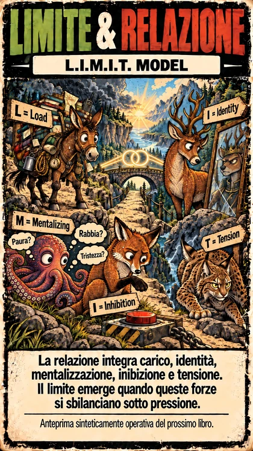
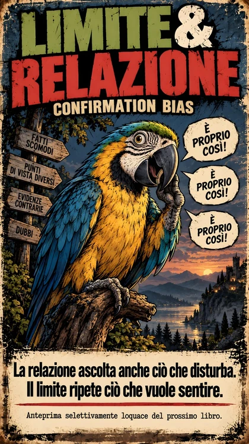
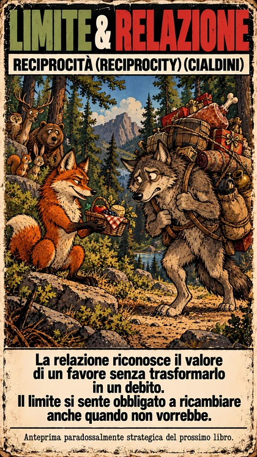
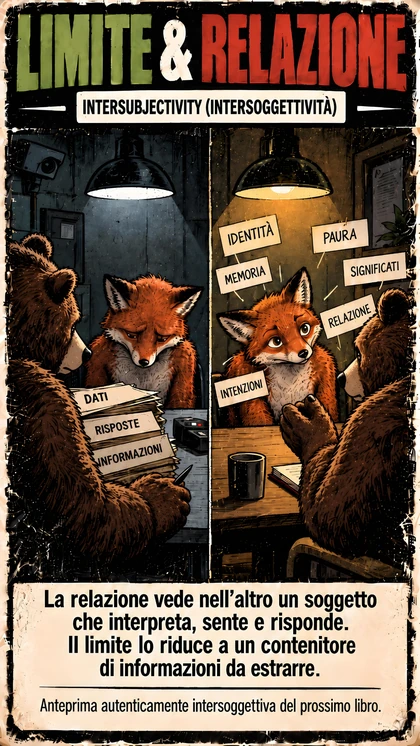
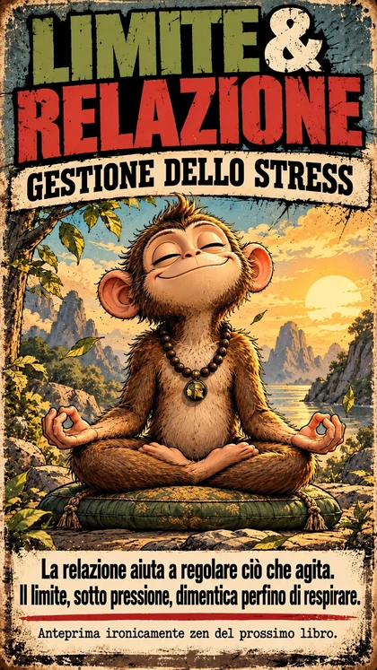
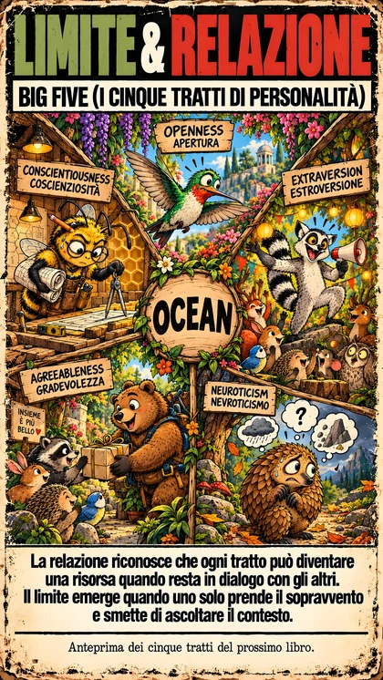

ARTICOLO · 15 minuti di lettura
Chop Suey! Il suicidio sotto processo
Depressione, giudizio sociale e l’ultima richiesta al Padre
Leggi l’articoloPSICOLOGIA, COMUNICAZIONE, ESPERIENZA
Esplorare come giudichiamo, comunichiamo e rispondiamo alla pressione. Un atlante visivo che collega concetti, esperienza e relazioni.
131 poster definitivi · 7 sezioni · Esplora tutta la raccolta
L’ATLANTE

IL PUNTO DI PARTENZA · 6 POSTER
Carico, identità, mentalizzazione, inibizione e tensione: cinque dimensioni compresenti nell’esperienza sotto pressione.
Esplora
56 POSTER
Metafore animali per riconoscere come selezioniamo le informazioni, formuliamo giudizi e prendiamo decisioni.
Esplora
9 POSTER
Principi e processi d’influenza: comprendere che cosa orienta una scelta e conservare spazio per valutarla.
Esplora
29 POSTER
Emozioni, coscienza, memoria, identità, motivazione e legami: le connessioni che danno forma all’esperienza.
Esplora
13 POSTER
Riconoscere le risposte di difesa ed esplorare strategie di coping, consapevolezza e regolazione, mantenendole distinte.
Esplora
6 POSTER
Il modello dei Big Five e le cinque dimensioni con cui descrivere le differenze di personalità.
Esplora12 POSTER
Comunicazione, retroazione, paradosso e cambiamento: osservare le dinamiche che mantengono o trasformano una relazione.
EsploraARTICOLI E RIFLESSIONI
ARTICOLO · 15 minuti di lettura
Depressione, giudizio sociale e l’ultima richiesta al Padre
Leggi l’articoloARTICOLO · 84 minuti di lettura
Invito alla consapevolezza
Leggi l’articolo